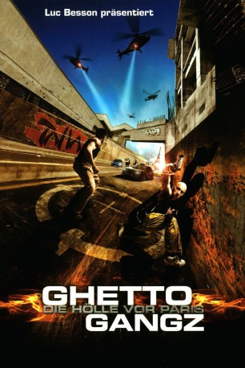
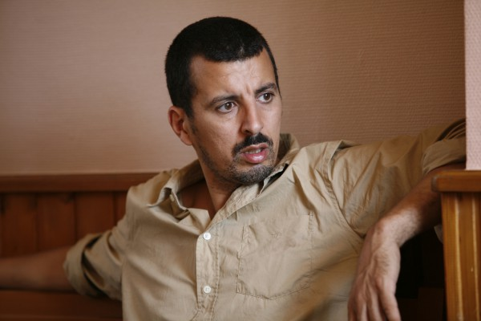
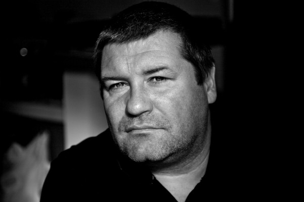

#311 Ghetto Gangz 1 - Die Hölle vor Paris
Alternativ: District B13 (Englischer Titel)
 
 IMDB-Wertung: 7.2 / 10
IMDB-Wertung: 7.2 / 10  Metascore: 70
Metascore: 70 
In the near future, the worst ghettos of Paris, France are literally walled off and among the worst is District B13. Controlled by the ruthless crime lord, Taha, a young righteous punk named Leïto is determined to bring him down. When the boss retaliates by kidnapping his sister, Lola, a rescue attempt by Leïto is destroyed by betrayal that gets him arrested and Lola kept in the clutches in Taha. Six months later, a crackerjack undercover cop named Damien is given a urgent mission: a neutron bomb has been stolen by Taha in District B13 which has an automatic timer function engaged and set to detonate in less than 24 hours. Now with time running out, Damien and Leïto must work together to find and stop the bomb, but there is far more to this crisis than any of the field players realize.
Jahr: 2004
Dauer: 84 Minuten
FSK: 18
Land: Frankreich Studio: EuropaCorp. DistributionTonspuren: DTS-HD - ,
Untertitel:
Auflösung: 1080p (1920×1080) Größe: 16998 MB
Genre: Action, Krimi, Sci-Fi, Thriller
Regisseur: Pierre Morel
Drehbuch: Luc Besson, Bibi Naceri
Soundtrack: Bastide Donny, Damien Roques
Darsteller:
- Cyril Raffaelli als Capt. Damien Tomaso
- David Belle als Leïto
- Dany Verissimo-Petit als Lola
-  Samir Guesmi als Jamel
-  Ludovic Berthillot als Le gros mercenaire
- Nicolas Wan Park als Le Chinois
- Tony D'Amario als K2
- Bibi Naceri als Taha Bemamud
- François Chattot als Krüger
- Nicolas Woirion als Corsini
- Patrick Olivier als Le colonel
- Jérôme Gadner als K2 boy 1
- Tarik Boucekhine als Yoyo, para 1
- Grégory Jean als Para 2
- Warren Zavatta als Para 3
- Dominique Dorol als Cerbère Taha
- Azad als Tarik
- Turan Bagci als Gorille entrée Marronniers
- Gilles Gambino als Garde 1
- Chamsi Charlesia als Garde 2
- Alain Rimoux als Le commissaire
- Marc Andréoni als Carlos Montoya
- Roberto Gil als Pedro
- Patrick Médioni als Le caissier
- Bernard Grenet als M. Keijman
- Lyès Salem als Samy
- Christophe Maratier als Le chef des SWAT
- Philippe Soutan als Le conducteur du fourgon
- Michel Estrade als Maton 1
- Jean-Marc Bellu als Maton 2
- MC Jean Gab'1 als Nico
- Louis-Philippe Manuel als Poursuivant 2
- Olivier Lobe als Poursuivant 1
- Jeff Rudom als Le yéti
- Jérôme Paquatte als Garde yéti
- Areski Garidel als K2 boy
- Thierry Guerrib als K2 boy
- Eric Mondoloni als K2 boy
- Stephane Vigroux als K2 Boy
- Arnaud Klein als Policier / Policeman , uncredited
Datei: X:\FSK18-Collections\Ghettogangz\Ghetto Gangz 1 - Die Hölle vor Paris (2004, FSK18, 1920x1080).mkv seit 16.02.2015
Festplatte: FSK18
 Alle Filme aus Gruppe 'FSK18-Collections\Ghettogangz'
Alle Filme aus Gruppe 'FSK18-Collections\Ghettogangz'